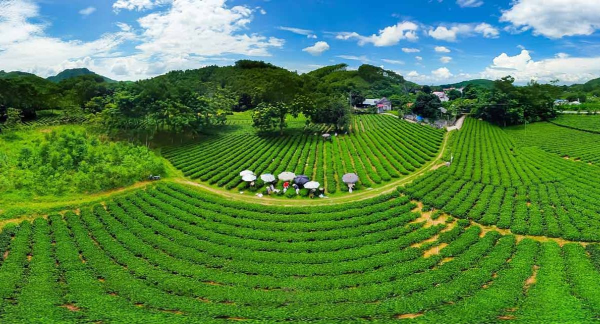
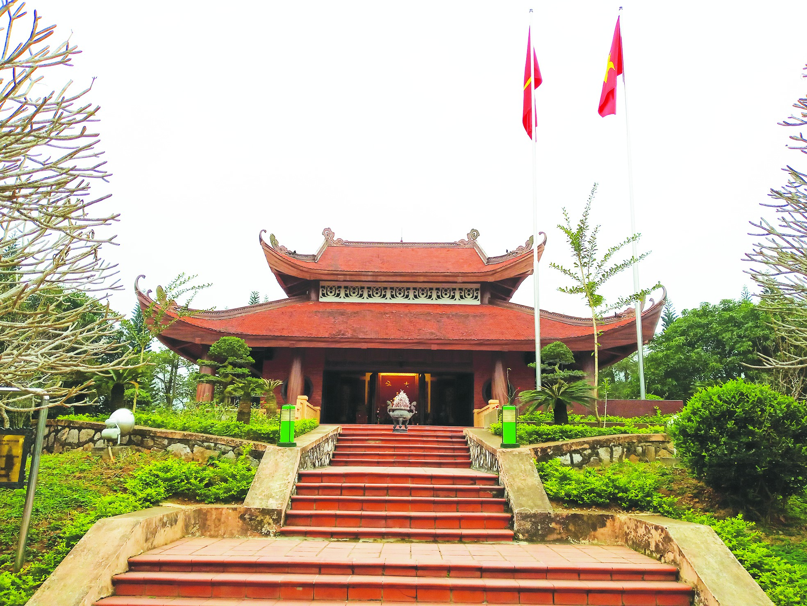
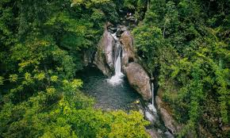
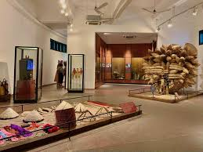
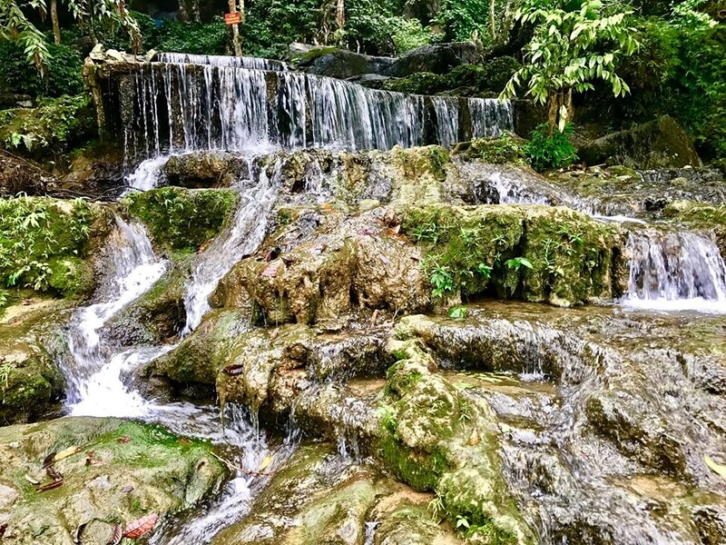

Thái Nguyên – một tỉnh nằm ở cửa ngõ giao lưu giữa vùng trung du miền núi phía Bắc và đồng bằng Bắc Bộ. Không chỉ nổi tiếng với danh xưng "Đệ nhất danh trà", nơi đây còn ẩn chứa những kho tàng thiên nhiên hoang sơ và những di tích lịch sử ghi dấu ấn một thời oanh liệt của dân tộc. Nếu bạn đang lên kế hoạch cho một chuyến đi vừa có sự tĩnh lặng của thiên nhiên, vừa có chiều sâu của văn hóa, Thái Nguyên chính là câu trả lời hoàn hảo.
1. Những Đồi Chè Xanh Ngát – Linh Hồn Của Vùng Đất Thái
Chè không chỉ là một loại cây công nghiệp, mà là linh hồn, là hơi thở của người dân Thái Nguyên. Đi dọc vùng đất này, bạn sẽ ngỡ ngàng trước những "đại dương xanh" nhấp nhô nối tiếp nhau.
Vùng chè đặc sản Tân Cương
Tân Cương là cái tên nổi tiếng nhất. Chè ở đây có hương thơm tự nhiên của cốm, vị chát nhẹ lúc mới uống và hậu vị ngọt sâu trong cổ họng.
Trải nghiệm thị giác: Đến đây vào khoảng tháng 4 đến tháng 9, bạn sẽ được thấy những nương chè mơn mởn nhất. Những hàng chè được trồng theo đường vòng cung, tạo nên một không gian nghệ thuật sắp đặt khổng lồ của thiên nhiên.
Hoạt động: Ngoài việc chụp hình check-in, bạn hãy ghé thăm các hộ dân làm chè truyền thống. Cảm giác được tự tay hái những búp chè "một tôm hai lá", sau đó đứng bên bếp lửa xem nghệ nhân "vò chè", "sao chè" bằng tay là một trải nghiệm vô cùng quý giá.

Đồi chè Cầu Đá và La Bằng
Nếu Tân Cương mang vẻ đẹp hiền hòa, thì đồi chè ở vùng La Bằng (Đại Từ) lại có chút hoang sơ hơn, nằm ngay dưới chân dãy núi Tam Đảo hùng vĩ. Sương mù từ núi cao thường xuyên tràn xuống bao phủ các nương chè, tạo nên khung cảnh huyền ảo như cõi thực, cõi mơ.
2. Hồ Núi Cốc – Huyền Thoại Tình Yêu Bất Diệt
Hồ Núi Cốc là một hồ nước nhân tạo rộng lớn với diện tích mặt nước lên tới 25km², bao gồm 89 hòn đảo lớn nhỏ. Nhưng điều làm nên sức hút của nơi này chính là câu chuyện tình buồn giữa nàng Cốc và chàng Công.
Khám phá vẻ đẹp mặt hồ
Bạn nên thuê thuyền để dạo quanh mặt hồ. Ngồi trên mạn thuyền, làn gió mát lành từ lòng hồ sẽ xua tan mọi mệt mỏi. Bạn sẽ đi qua những hòn đảo như Đảo Cò, Đảo Sim, nơi rừng cây xanh ngắt bao phủ, là nơi trú ngụ của nhiều loài chim.
Khu du lịch tâm linh và giải trí
- Thuyết Nhân Quả: Tại đây có bức tượng Phật Thích Ca Mâu Ni cao 45m, bên trong là ngôi chùa mang tên "Chùa Vàng". Đây là một công trình kiến trúc độc đáo, nơi du khách có thể cầu nguyện bình an.
- Hầm địa ngục: Một hệ thống hang động nhân tạo kể về các tích cổ, mang lại cảm giác phiêu lưu nhẹ nhàng cho những gia đình có trẻ nhỏ.
3. Hành Trình Về Nguồn Tại ATK Định Hóa
Thái Nguyên từng là "Thủ đô kháng chiến" của cả nước. ATK Định Hóa là Di tích quốc gia đặc biệt, nơi Chủ tịch Hồ Chí Minh và các vị lãnh đạo đã sống và làm việc trong những năm tháng kháng chiến chống Pháp gian khổ.

Lán Tỉn Keo
Ngôi lán nhỏ bằng tre nứa nằm bên đồi cây xanh ngắt. Tại chính nơi này, Bác Hồ đã chủ trì nhiều cuộc họp quan trọng quyết định vận mệnh dân tộc, trong đó có chiến dịch Điện Biên Phủ lịch sử.
Đồi Khau Tý
Nơi đặt trụ sở đầu tiên của Bác tại ATK. Đứng giữa không gian tĩnh lặng của núi rừng Định Hóa, bạn sẽ cảm nhận được sự giản dị nhưng vĩ đại của lịch sử. Đây là địa điểm giáo dục truyền thống tuyệt vời cho thế hệ trẻ.
4. Chinh Phục "Nàng Thơ Hoang Dại" – Suối Cửa Tử
Nếu bạn là người đam mê trekking (đi bộ đường dài) và mạo hiểm, Suối Cửa Tử (xã Hoàng Nông) là cái tên phải có trong danh sách.

Tại sao gọi là "Cửa Tử"?
Cái tên nghe có vẻ đáng sợ nhưng thực chất nó ám chỉ sự hiểm trở và kín đáo của dòng suối. Suối chảy giữa hai vách núi cao vút, lòng suối nhiều đá tảng trơn trượt. Để khám phá hết các tầng thác, bạn cần có sức khỏe tốt và sự kiên trì.
- Trải nghiệm nhảy thác: Ở một số tầng thác, nước dồn về tạo thành những hồ bơi tự nhiên trong vắt, bạn có thể nhảy từ trên vách đá xuống dòng nước mát lạnh – một cảm giác bùng nổ sảng khoái.
- Cắm trại ven suối: Buổi tối ngủ lại bên bờ suối, nghe tiếng nước chảy rì rào và tiếng côn trùng kêu là cách tốt nhất để tái tạo năng lượng.
5. Bảo Tàng Văn Hóa Các Dân Tộc Việt Nam
Nằm ngay trung tâm thành phố Thái Nguyên, đây là điểm đến để bạn có cái nhìn tổng quan về sự đa dạng của các dân tộc Việt Nam.

Không gian trưng bày
Bảo tàng chia thành nhiều khu vực theo vùng miền: vùng núi cao phía Bắc, vùng đồng bằng, vùng ven biển và Tây Nguyên. Mỗi khu vực đều tái hiện lại nhà ở, trang phục và các vật dụng lao động đặc trưng.
Hoạt động ngoài trời
Khu vực sân vườn thường xuyên tổ chức các lễ hội dân gian, múa rối nước và trò chơi truyền thống vào các dịp lễ.
6. Những Hang Động Kỳ Ảo: Hang Phượng Hoàng - Suối Mỏ Gà
Nằm tại huyện Võ Nhai, đây là một quần thể thắng cảnh bao gồm một hang động nằm trên núi cao và một dòng suối chảy ra từ lòng núi.

Hang Phượng Hoàng: Sau khi leo khoảng 700-800 bậc đá, bạn sẽ vào đến hang. Bên trong là không gian rộng lớn với những khối nhũ đá hình thù kỳ lạ, lấp lánh dưới ánh đèn pin.
Suối Mỏ Gà: Sau khi xuống núi, bạn có thể nhảy ngay xuống dòng suối Mỏ Gà để tắm. Nước ở đây quanh năm mát lạnh, chảy thành những dòng thác nhỏ trắng xóa.
Kinh Nghiệm Du Lịch Thái Nguyên Tự Túc
Để chuyến đi thuận lợi, bạn nên lưu ý các điều sau:
Thời điểm lý tưởng
Đẹp nhất là vào mùa hè (tháng 5 - tháng 7) để tránh nóng và tắm suối, hoặc mùa thu (tháng 9 - tháng 11) khi thời tiết khô ráo, dễ dàng leo núi.
Phương thức di chuyển
Thái Nguyên cách Hà Nội khoảng 80km, bạn có thể đi bằng xe máy theo quốc lộ 3 hoặc đi xe khách từ bến xe Mỹ Đình/Giáp Bát với giá vé rất rẻ.
Chuẩn bị trang phục
Nếu có ý định leo suối Cửa Tử hay hang Phượng Hoàng, hãy chuẩn bị giày leo núi có độ bám tốt và một bộ quần áo dự phòng.